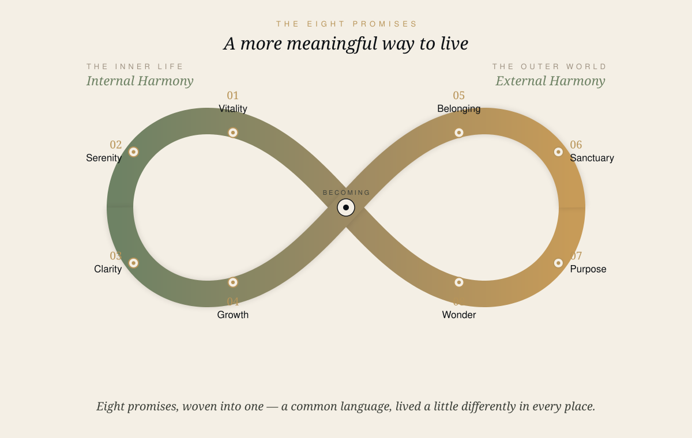

Source · Tri-Vananda_2026_Task-Data.xlsx · Jul 2026
GWS will not return to Phuket for years. The Health Resort opens once. The masterplan unfolds once. The brand has not yet caught up to the product — the Summit window is the moment to close that gap.
Looking after yourself and your family takes more than one form. PATAMA brings these together into one way of living well, across our places in Phuket — not an occasional escape, but the shape of an ordinary day.

The body is not a vehicle to be maintained until it fails. It is a biological system that responds to daily inputs — movement, nourishment and rest can influence how a person ages.
Serenity is not the absence of stress. It is the practised capacity to absorb life's pressures and return to equilibrium — without being diminished by them.
A mind that is sharp, regulated and free from unnecessary noise is the instrument through which all other wellbeing is reached. Attention and resilience are trainable capacities.
The person who stops becoming begins to contract. Personal growth is a core dimension of a well-lived life — and uniquely, it has no ceiling. It is not a destination, but a way of inhabiting life.
One of the longest studies of adult life reaches a conclusion that supersedes most others: the quality of relationships shapes the quality of life. Community is not an amenity. It is a determinant of how long and how well people live.
The places people live are not neutral containers for health; they are active determinants of it. Through biophilic design, the architecture of where you live can shape the biology of how you age.
A life directed by what matters most is associated with greater health, resilience and longevity. Purpose is not ambition. It is the quiet, clarifying sense of why that filters every decision and makes ordinary life meaningful.
Human beings are meaning-making creatures who need encounters with beauty, culture and the extraordinary to feel fully alive. Wonder is the practice of encountering the extraordinary — cultivated, not merely consumed.
| 01 | Vitality | Your body will function at its best — energised, strong, biologically younger. |
| 02 | Serenity | You will face life's pressures without being defined by them. |
| 03 | Clarity | Your mind will become sharper, calmer, and more certain. |
| 04 | Growth | You will keep becoming — stretching, discovering, expanding — for the rest of your life. |
| 05 | Belonging | You will be held by relationships and a community that strengthen you. |
| 06 | Sanctuary | Your environment — physical, natural and social — will protect and restore you. |
| 07 | Purpose | You will live with a clear sense of why — and it will shape every day. |
| 08 | Wonder | You will encounter beauty and transcendence that expand what you believe is possible. |
The Summit marks its 20th Anniversary in Phuket under this theme. Each dimension of the 2026 theme lives at one of the Group's properties — and carries the Eight Promises across them.
Personalised, evidence-based wellbeing, delivered at the Health Resort by Clinique La Prairie at Tri Vananda.
01 Vitality — energised, strong, and resilient
02 Serenity — measured, in biofeedback and recovery
03 Clarity — sharp, calm, and certain
Hospitality, nature, cuisine and connection, refined over two decades on a private bay above the Andaman.
02 Serenity — healing rituals, practised as craft
04 Growth — expanding, without a ceiling
08 Wonder — open to beauty and the extraordinary
A living community of forests and lakes, where Thai care and long-term stewardship shape everyday life.
05 Belonging — strengthened by the people around you
06 Sanctuary — protected and restored
07 Purpose — a clear sense of why
The first public appearance of the campaign question, ahead of the Sep–Dec launch arc.
The brand's first expression in practice.
Not a conventional luxury property launch (no fancy-dress glamour theme) — wellbeing-led, intimate, for selected groups of wise voices in wellbeing.
Supporting activation — collaborate to support the festival team, same day as the Health Resort opening.
Forward items are planned and in development — indicative, not committed. Internal until each is cleared for announcement.
Four areas proposed to the Summit for its 20th Anniversary edition — a customised package, shaped together with GWS. Exhibitor presence 10–13 November.
Montara as one group with three complementary properties — four brands, presented together across official GWS channels.
An intimate farm-to-table dinner reception for selected Global Wellness Summit delegates.
Selected Montara experiences within the official delegate tours — 9 and 14 November 2026.
Montara and Clinique La Prairie joining the official Summit programme.
GWS collaboration contract — foundation for all GWS activity.